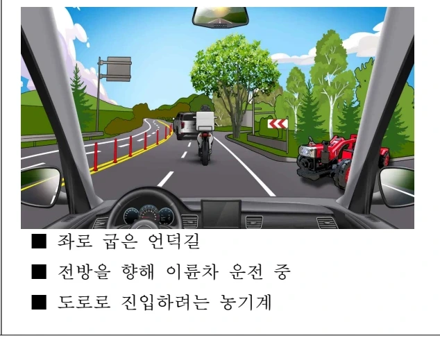

860. 在下列情况下，想要变更至第1车道时，最安全的两种驾驶方法是？

- ①通过左后视镜确认在一车道上行驶的车辆。
- ②为了不让前方轿车变道至一车道，提前打远光灯以示警告。
- ③因为农业机械可能会进入道路，所以迅速变道至一车道。
- ④因为是上坡路，所以加速行驶。
- ⑤因为前方的两轮车可能会变道至一车道，所以应与其维持安全距离。
查看答案
答案
① 通过左后视镜确认在一车道上行驶的车辆。
⑤ 因为前方的两轮车可能会变道至一车道，所以应与其维持安全距离。
依据
如果不保证安全距离，当前车突然刹车或变道时，很难做出适当的反应。特别是山路更加危险，因为你看不到山顶以外的地方，因此请降低车速并与前车保持足够的安全距离。
依据文字为学习用机器翻译。